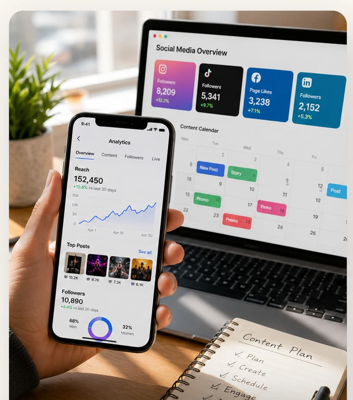

Plan
Content pillars and a posting rhythm shaped around the local customer base, not a copy-paste strategy.

Social Media Management · Royal Oak, MI
Antio Creative is based in Royal Oak, so this isn't remote guesswork. It's built by someone who walks Main Street and Washington Ave regularly and knows the businesses competing for attention along the Woodward corridor.
Royal Oak's downtown packs restaurants, bars, and boutiques within a few blocks of each other, and Ferndale, Berkley, and Clawson add even more competition close by. Being local isn't just a convenience here, it means Antio Creative already understands the customer base, the foot traffic patterns, and what actually gets noticed on Main Street versus buried in a feed.
The result is a monthly content system built around your business specifically, not a generic template that could belong to any city.
Content pillars and a posting rhythm shaped around the local customer base, not a copy-paste strategy.
Photography, video, and captions produced in person, often the same week they are needed.
Consistent scheduling and monthly reporting from someone who is easy to reach and easy to meet up with.